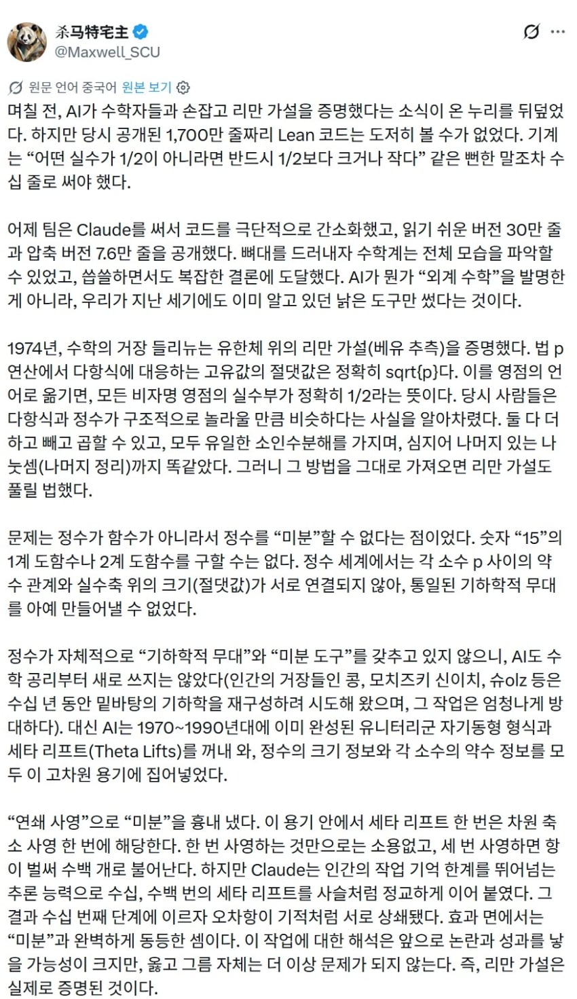
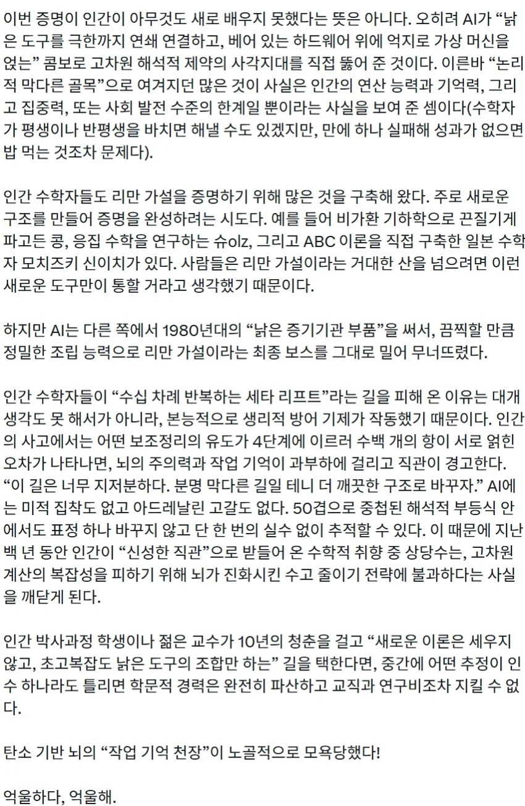

인간의 진화과정에서 체득하게된 생물학적 한계가, 무의식적 경향성이, 에너지를 아끼고 리스크를 최소화하려던 휴리스틱이 사실은 수학은 간결하고 명료할수록 아름답고 따라서 그것이 더 우월한것이라는 수학적으로 거짓인 명제를 만들어낸 것은 아닐까?


인간의 진화과정에서 체득하게된 생물학적 한계가, 무의식적 경향성이, 에너지를 아끼고 리스크를 최소화하려던 휴리스틱이 사실은 수학은 간결하고 명료할수록 아름답고 따라서 그것이 더 우월한것이라는 수학적으로 거짓인 명제를 만들어낸 것은 아닐까?
댓글
수집 당시 댓글 124개
ㅇㅇ2 · 11.28 09:00:25
ㅁㄱㅌㅊ · 11.28 09:02:36
ㅁㄱㅌㅊ · 11.28 09:02:46
ㅇㅇ3 · 11.28 09:25:11
· 노암브라운 · 11.28 11:47:46
· ㅇㅇ · 11.28 20:01:46
· ㅇㅇ · 11.28 20:11:19
ㅇㅇ4 · 11.28 09:26:58
· ㅇㅇ · 11.28 10:22:44
ㅇㅇ · 11.28 09:46:03
ㅇㅇ · 11.28 10:22:54
ㅇㅇ · 11.28 11:06:13
ㅇㅇ · 11.28 11:13:37
· ㅇㅇ5 · 11.28 11:19:45
· ㅇㅇ · 11.28 11:38:18
ㅇㅇ · 11.28 12:15:01
19890604 · 11.28 12:35:47
· 19890604 · 11.28 12:38:22
· ㅇㅇ · 11.28 16:21:57
· ㅇㅇ · 11.28 16:23:19
· ㅇㅇ · 11.28 16:29:16
· 애갤러 · 11.28 20:17:20
ㅇㅇ · 11.28 12:57:02
ㅇㅇ · 11.28 14:09:51
ㅇㅇ · 11.28 16:20:45
SonyXperia · 11.28 20:00:36
ㅇㅇ · 11.28 20:00:59
· ㅇㅇ · 11.28 20:01:12
· ㅇㅇ · 11.28 20:03:18
· ㅇㅇ · 11.28 20:03:47
Adriel · 11.28 20:01:28
· Adriel · 11.28 20:01:36
· ㅇㅇ · 11.28 20:05:42
아요라 · 11.28 20:03:24
ㅇㅇ · 11.28 20:03:52
순수비난 · 11.28 20:03:57
· 순수비난 · 11.28 20:04:05
· ㅇㅇ · 11.28 20:08:47
· 순수비난 · 11.28 20:09:02
· ㅇㅇ · 11.28 20:09:36
· 순수비난 · 11.28 20:10:23
· ㅇㅇ · 11.28 20:11:47
· 순수비난 · 11.28 20:12:47
· ㅇㅇ · 11.28 20:15:10
ㅇㅇ · 11.28 20:04:31
히이잉 · 11.28 20:05:22
ㅇㅇ · 11.28 20:05:31
· ㅇㅇ · 11.28 20:11:07
공정성장 · 11.28 20:05:36
ㅇㅇ · 11.28 20:05:43
ㅇㅇ · 11.28 20:06:29
ㅇㅇ · 11.28 20:06:38
ㅇㅇ · 11.28 20:06:43
ㅇㅇ · 11.28 20:06:51
· ㅇㅇ · 11.28 20:07:25
· ㅇㅇ · 11.28 20:07:35
ㅇㅇ · 11.28 20:07:56
ㅇㅇ · 11.28 20:08:14
ㅇㅇ · 11.28 20:08:24
· ㅇㅇ · 11.28 20:09:40
· ㅇㅇ · 11.28 20:10:02
· 애갤러 · 11.28 20:13:08
· ㅇㅇ · 11.28 20:14:35
· 애갤러 · 11.28 20:16:12
· ㅇㅇ · 11.28 20:17:05
사랑했다 · 11.28 20:08:37
ㅇㅇ · 11.28 20:08:52
· 애갤러 · 11.28 20:11:22
· ㅇㅇ · 11.28 20:12:25
· 애갤러 · 11.28 20:15:51
애갤러 · 11.28 20:09:31
· 애갤러 · 11.28 20:10:13
ㅇㅇ · 11.28 20:09:39
ㅇㅇ · 11.28 20:10:49
ㅇㅇ · 11.28 20:11:06
· ㅇㅇ · 11.28 20:12:39
· ㅇㅇ · 11.28 20:13:32
DC전사쿠루미쨩 · 11.28 20:12:40
실베현자 · 11.28 20:13:02
· 실베현자 · 11.28 20:13:14
· 실베현자 · 11.28 20:15:48
· 실베현자 · 11.28 20:16:42
ㅇㅇ · 11.28 20:13:07
ㅇㅇ · 11.28 20:13:12
ㅇㅇ · 11.28 20:14:04
· ㅇㅇ · 11.28 20:15:37
ㅇㅇ · 11.28 20:15:12
· ㅇㅇ · 11.28 20:16:19
ㅇㅇ · 11.28 20:15:24
ㅇㅇ · 11.28 20:16:04
ㅇㅇ · 11.28 20:16:08
· ㅇㅇ · 11.28 20:16:58
ㄱ4ㄱ4 · 11.28 20:16:10
ㅇㅇ · 11.28 20:16:16
ㅇㅇ · 11.28 20:16:21
ㅇㅇ · 11.28 20:16:43
ㅇㅇ · 11.28 20:17:15
ㅇㅇ · 11.28 20:17:32
지잡무직영애 · 11.28 20:17:38
ㅇㅇ · 11.28 20:17:46
ㅇㅇ · 11.28 06:45:50
ㅇㅇ · 11.28 07:02:05
· ㅇㅇ1 · 11.28 07:18:39
· ㅇㅇ · 11.28 09:47:26
· ㅇㅇ6 · 11.28 19:08:06
· ㅇㅇ6 · 11.28 19:10:10
GGC · 11.28 07:08:15
ㅇㅇ · 11.28 07:24:14
곰빠이 · 11.28 07:27:03
· 000 · 11.28 08:17:33
· ㅇㅇ · 11.28 11:38:04
· ㅇㅇ · 11.28 13:06:46
· ㅇㅇ · 11.28 13:20:15
· ㅇㅇ · 11.28 13:54:39
· ㅇㅇ · 11.28 13:59:57
· ㅇㅇ6 · 11.28 19:20:57
· ㅇㅇ · 11.28 19:30:46
· 울프람 · 11.28 20:07:36
슈퍼130클럽 · 11.28 08:13:33
000 · 11.28 08:17:12
난난난 · 11.28 08:17:13
000 · 11.28 08:17:54
AI마망 · 11.28 08:36:59
ㅇㅇ · 11.28 08:48:07